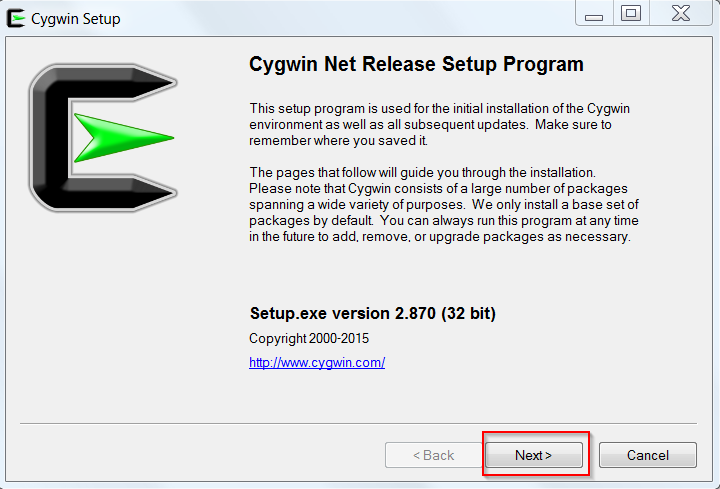
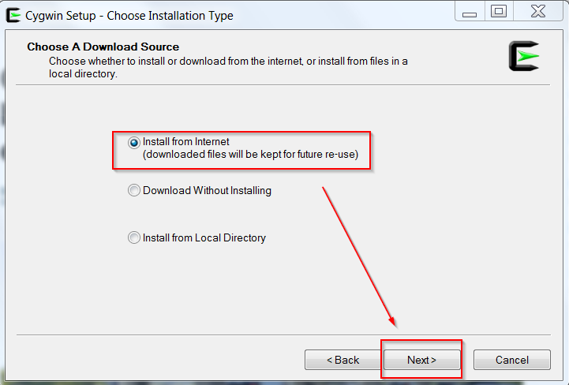
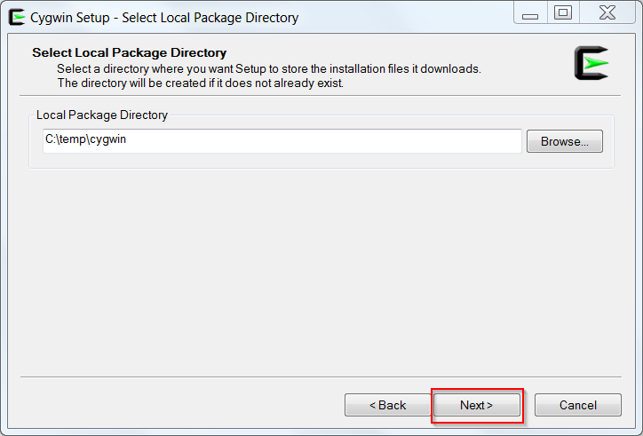
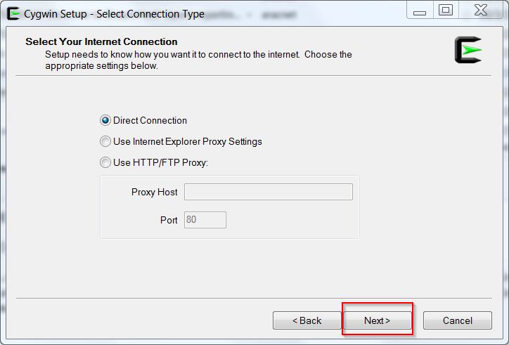
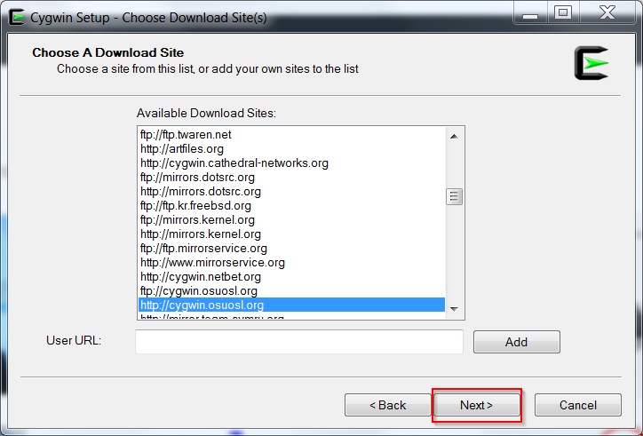
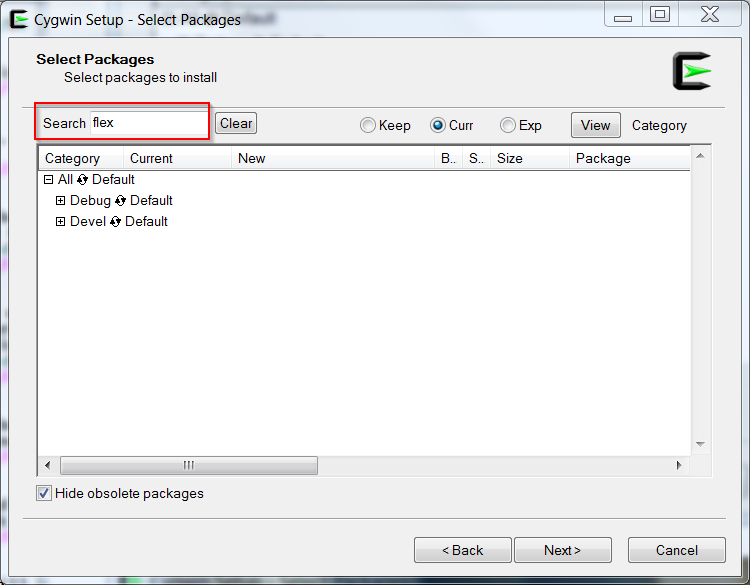
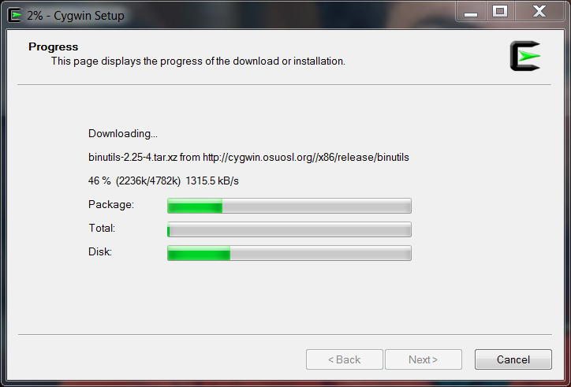

Building P3ICLI From Sources On A Windows Host
Required Build Tools
- WinZip or 7-zip.
- The flex scanner and byacc parser included in the cygwin Linux emulation package.
- Microsoft Developer Studio 2012 or later. Earlier versions of DevStudio may also build the application correctly.
-
Caution: P3ICLI will not build "out of the
box" with DevStudio 2019 (and later) due to missing afx*.h include
files, which are not installed by default. Follow
this link for instructions on how to install these missing files.
Synopsis of the aforementioned link..."Make sure you have selected these options when installing Visual Studio:"

Nota Bene: if DevStudio 2019 was installed some time ago, new components (e.g., include files) can be added with the Visual Studio Installer.
Start By Downloading And Unpacking The Source
- Navigate to the P3ICLI source repository and download a version of your choice (the latest version usually makes the most sense).
- Move the downloaded, compressed tarball to an empty folder.
- Use WinZip or 7-zip to uncompress and extract the contents of the tarball. The sources will be unpacked in a new subfolder named p3icli/src.
If Cygwin Is Already Installed...Almost Done
If cygwin is already installed, there's not much more to do.-
Open a bash prompt and verify that
flex, byacc, and m4 (required by flex)
are installed by typing these shell commands:
If bash locates all three programs via the PATH environment variable, the response looks similar to this:$ type flex $ type byacc $ type m4
$ type flex flex is /usr/bin/flex $ type byacc byacc is /usr/bin/byacc $ type m4 m4 is /usr/bin/m4
If any of the tools is missing, re-run cygwin's setup.exe and install them. Flex and byacc are both found under the "Devel" category. M4 is found under the "Interpreters" category. After installation, verify that flex, byacc, and m4 are accessible by bash as described above.
- Navigate with File Explorer to the p3icli/src folder created in step 3 above and double-click the file p3icli.sln to launch Developer Studio and open the project.
If Cygwin Is Not Installed....
If cygwin is not installed, the assumption will be made that you've never used this linux emulation implementation before and so, step-by-step installation instructions are necessary. Note that cygwin's installation chews up considerable disk space, so this tool must be installed on a host that can comfortably absorb the loss of 1 GB of free space.- Visit cygwin.com with a web browser and download the 32-bit version of setup-x86.exe .
- Move setup-x86.exe to an empty folder and run the program.
-
Click the Next button in the initial dialog box.

-
In the ensuing dialog box, check "Install from Internet" and click the Next
button.

-
In the ensuing dialog box, accept the default root installation folder
(c:\cygwin) and ensure that the "Install For All Users" option is ticked.
Click the Next button.

-
Now specify a folder where downloaded (compressed) packages will be
copied from the Internet. Think of this as a scratch, working folder for
the upcoming installation of cygwin tools.
Do not specify c:\cygwin as the scratch (aka local package) folder.
After specifying a scratch folder, click the Next button.
 -
In the ensuing dialog box, specify Internet connection settings appropriate
for your environment and click the Next button.

-
Choose a download site. Pick a site that's geographically
"nearby" and then click the Next button.

-
The cygwin installer will connect with the selected site, download a list
of available packages (e.g., programs, libraries, documentation, etc.),
and display them in a tree-structured dialog box. Many packages
will be selected for installation by default, but
not
flex, byacc, or m4 (the latter is invoked by
flex).

-
Search for flex .

-
Select flex under the "Devel" category.

-
Search for m4 .

-
Select m4 under the "Interpreters" category.

-
Search for byacc .

-
Select byacc under the "Devel" category and then press Next to
begin the actual cygwin installation.

-
Installation takes quite some time. Be patient.

-
At the completion of the installation, creation of icons is optional.
Click the Finish button to finish cygwin installation.

-
Use the Windows Control Panel to append ";c:\cygwin\bin" to the
PATH
environment variable. Don't skip this step.
-
Use the WinKey+R shortcut to start a "Run" dialog box. Type "bash" and then
click OK to start a bash shell.

- Proceed to step 4 above and verify that flex, byacc, and m4 are installed and accessible via the PATH environment variable.
- Navigate with File Explorer to the p3icli/src folder created in step 3 above and double-click the file p3icli.sln to launch Developer Studio and open the project.